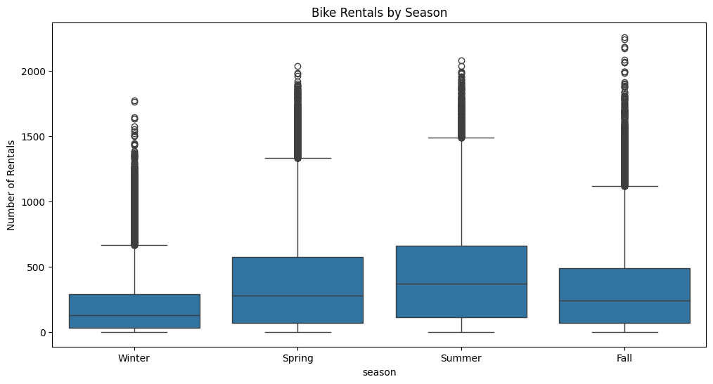
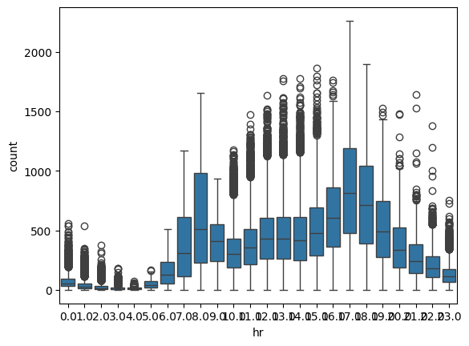
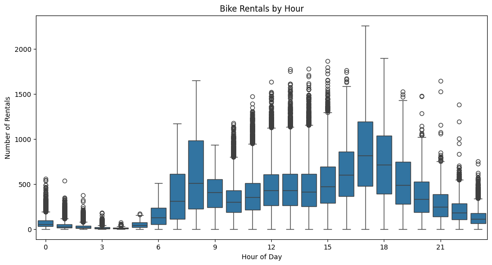
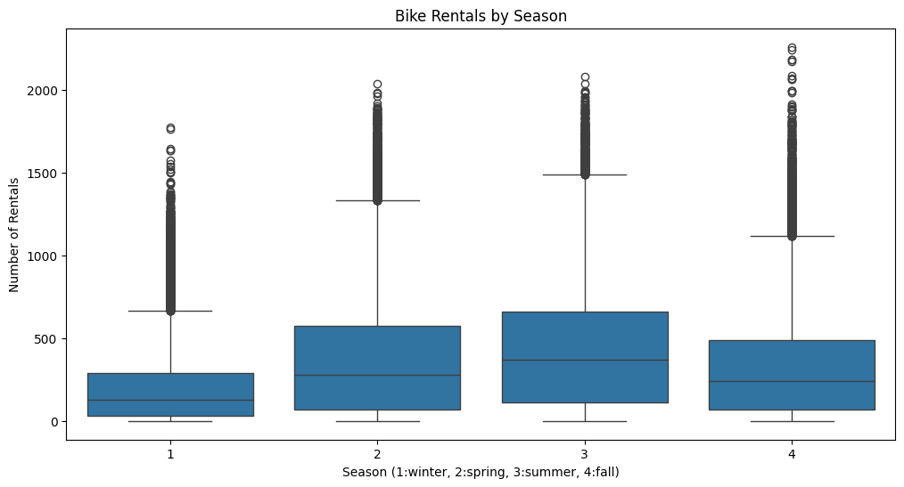
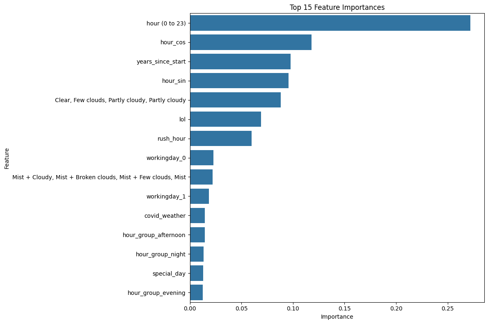

import pandas as pd
import numpy as np
from sklearn.model_selection import train_test_split, GridSearchCV
from sklearn.preprocessing import StandardScaler, OneHotEncoder
from sklearn.ensemble import RandomForestRegressor, GradientBoostingRegressor
from tensorflow.keras.models import Sequential
from tensorflow.keras.layers import Dense, Dropout
from tensorflow.keras.optimizers import Adam
from tensorflow.keras.callbacks import EarlyStopping, ReduceLROnPlateau
import matplotlib.pyplot as plt
import seaborn as sns
# Load the training dataset
data_url = "https://raw.githubusercontent.com/byui-cse/cse450-course/master/data/bikes.csv"
data = pd.read_csv(data_url)# Load the mini holdout dataset
mini_holdout_url = "https://raw.githubusercontent.com/byui-cse/cse450-course/master/data/biking_holdout_test_mini.csv"
mini_holdout = pd.read_csv(mini_holdout_url)# Add the 'count' column to the training dataset
data['count'] = data['casual'] + data['registered']# Drop the 'casual' and 'registered' columns
data = data.drop(columns=['casual', 'registered'])
# Convert 'dteday' to datetime format
data['dteday'] = pd.to_datetime(data['dteday'])
mini_holdout['dteday'] = pd.to_datetime(mini_holdout['dteday'])
# Function to engineer features
def engineer_features(df):
df = df.copy()
# Extract temporal features
df['year'] = df['dteday'].dt.year
df['month'] = df['dteday'].dt.month
df['day'] = df['dteday'].dt.day
df['day_of_week'] = df['dteday'].dt.dayofweek
df['is_weekend'] = df['day_of_week'].isin([5, 6]).astype(int)
# Cyclical encoding for hour (captures time of day patterns)
df['hour_sin'] = np.sin(2 * np.pi * df['hr'] / 24)
df['hour_cos'] = np.cos(2 * np.pi * df['hr'] / 24)
# Cyclical encoding for month (captures seasonal patterns)
df['month_sin'] = np.sin(2 * np.pi * df['month'] / 12)
df['month_cos'] = np.cos(2 * np.pi * df['month'] / 12)
# Cyclical encoding for day of week (captures weekly patterns)
df['day_of_week_sin'] = np.sin(2 * np.pi * df['day_of_week'] / 7)
df['day_of_week_cos'] = np.cos(2 * np.pi * df['day_of_week'] / 7)
# Interaction features (capture combined effects)
df['temp_hum'] = df['temp_c'] * df['hum'] # Hot and humid days impact differently
df['temp_windspeed'] = df['temp_c'] * df['windspeed'] # Wind chill effect
df['hum_windspeed'] = df['hum'] * df['windspeed'] # Combined weather impact
# Enhanced holiday/workingday features
df['special_day'] = ((df['holiday'] == 1) | (df['is_weekend'] == 1)).astype(int)
# Create hour groups with unique labels
df['hour_group'] = pd.cut(df['hr'],
bins=[-1, 5, 11, 16, 20, 24],
labels=['early_morning', 'morning', 'afternoon', 'evening', 'night'])
# Create "rush hour" feature (typical commuting times)
df['rush_hour'] = ((df['hr'] >= 7) & (df['hr'] <= 9) |
(df['hr'] >= 16) & (df['hr'] <= 18)).astype(int)
# Weather and holiday interaction (bad weather on holidays has different impact)
df['weather_holiday'] = df['weathersit'] * df['holiday']
# COVID-19 periods (since dataset spans 2011-2023)
df['pre_covid'] = (df['dteday'] < '2020-03-01').astype(int)
df['early_covid'] = ((df['dteday'] >= '2020-03-01') & (df['dteday'] < '2021-06-01')).astype(int)
df['late_covid'] = ((df['dteday'] >= '2021-06-01') & (df['dteday'] < '2022-04-01')).astype(int)
df['post_covid'] = (df['dteday'] >= '2022-04-01').astype(int)
# Long-term trend capture (years since start of data)
df['years_since_start'] = (df['dteday'].dt.year - 2011) + (df['dteday'].dt.month - 1)/12
# Interaction between COVID periods and other features
df['covid_weather'] = ((df['early_covid'] == 1) | (df['late_covid'] == 1)) * df['weathersit']
df['covid_weekend'] = ((df['early_covid'] == 1) | (df['late_covid'] == 1)) * df['is_weekend']
# Create one-hot encoding for hour_group
hour_group_dummies = pd.get_dummies(df['hour_group'], prefix='hour_group')
df = pd.concat([df.drop(columns=['hour_group']), hour_group_dummies], axis=1)
# Drop 'dteday' after extracting all features
df = df.drop(columns=['dteday'])
return dfplt.figure(figsize=(12, 6))
ax = sns.boxplot(x=data['season'], y=data['count']) # Assign the plot to 'ax'
plt.title('Bike Rentals by Season')
plt.ylabel('Number of Rentals')
# Set custom x-axis tick labels
ax.set_xticklabels(['Winter', 'Spring', 'Summer', 'Fall'])
plt.show()UserWarning: set_ticklabels() should only be used with a fixed number of ticks, i.e. after set_ticks() or using a FixedLocator.
ax.set_xticklabels(['Winter', 'Spring', 'Summer', 'Fall'])
import matplotlib.ticker as ticker
# Apply feature engineering
data = engineer_features(data)
mini_holdout = engineer_features(mini_holdout)
sns.boxplot(x=data['hr'], y=data['count'])
# Visualize the relationship between hour and count
plt.figure(figsize=(12, 6))
plt.xticks(range(24), range(24))
sns.boxplot(x=data['hr'], y=data['count'])
plt.title('Bike Rentals by Hour')
plt.xlabel('Hour of Day')
plt.ylabel('Number of Rentals')
plt.gca().xaxis.set_major_locator(ticker.MaxNLocator(integer=True))
plt.show()
# Visualize the relationship between season and count
plt.figure(figsize=(12, 6))
sns.boxplot(x=data['season'], y=data['count'])
plt.title('Bike Rentals by Season')
plt.xlabel('Season (1:winter, 2:spring, 3:summer, 4:fall)')
plt.ylabel('Number of Rentals')
plt.show()


data.head()| dteday | hr | casual | registered | temp_c | feels_like_c | hum | windspeed | weathersit | season | holiday | workingday | |
|---|---|---|---|---|---|---|---|---|---|---|---|---|
| 0 | 1/1/2011 | 0.0 | 3 | 13 | 3.0 | 3.0 | 0.7957 | 0.8 | 1 | 1 | 0 | 0 |
| 1 | 1/1/2011 | 1.0 | 8 | 30 | 1.7 | 1.7 | 0.8272 | 0.8 | 1 | 1 | 0 | 0 |
| 2 | 1/1/2011 | 2.0 | 5 | 26 | 1.9 | 1.9 | 0.8157 | 1.1 | 1 | 1 | 0 | 0 |
| 3 | 1/1/2011 | 3.0 | 3 | 9 | 2.5 | 2.5 | 0.7831 | 0.8 | 1 | 1 | 0 | 0 |
| 4 | 1/1/2011 | 4.0 | 0 | 1 | 2.0 | 2.0 | 0.8075 | 1.1 | 1 | 1 | 0 | 0 |
# Identify categorical features
categorical_features = ['season', 'weathersit', 'holiday', 'workingday']
# One-hot encode categorical features
encoder = OneHotEncoder(sparse_output=False, handle_unknown='ignore')
encoded_features = encoder.fit_transform(data[categorical_features])
encoded_columns = encoder.get_feature_names_out(categorical_features)
encoded_df = pd.DataFrame(encoded_features, columns=encoded_columns)
data = pd.concat([data.drop(columns=categorical_features), encoded_df], axis=1)
# Identify numerical features (exclude 'count' and any other non-feature columns)
numerical_features = [col for col in data.columns
if col not in ['count', 'instant']
and not col.startswith('season_')
and not col.startswith('weathersit_')
and not col.startswith('holiday_')
and not col.startswith('workingday_')]
# Normalize numerical features
scaler = StandardScaler()
data[numerical_features] = scaler.fit_transform(data[numerical_features])
# Define features (X) and target (y)
X = data.drop(columns=['count'])
y = data['count']
# Split into training and validation sets
X_train, X_val, y_train, y_val = train_test_split(X, y, test_size=0.2, random_state=42)
print("Training a gradient boosting model first to determine feature importance...")
# Train a gradient boosting model to identify important features
gb_model = GradientBoostingRegressor(n_estimators=100, random_state=42)
gb_model.fit(X_train, y_train)
feature_label_mapping = {
'dteday' : 'date',
'season' : 'season (1:winter, 2:spring, 3:summer, 4:fall)',
'hr' : 'hour (0 to 23)',
'casual' : 'weather day is holiday or not',
'registered' : 'if day is neither weekend nor holiday is 1, otherwise is 0.',
'temp_c' : 'lol',
'feels_like_c': 'Clear, Few clouds, Partly cloudy, Partly cloudy',
'hum': 'Mist + Cloudy, Mist + Broken clouds, Mist + Few clouds, Mist',
'windspeed': 'Light Snow, Light Rain + Thunderstorm + Scattered clouds, Light Rain + Scattered clouds',
'weathersit': 'Heavy Rain + Ice Pallets + Thunderstorm + Mist, Snow + Fog',
'season' : 'temperature in Celsius.',
'holiday': 'Feels like temperature in Celsius.',
'workingday': 'humidity percentage'
}
# Get feature importances
feature_importances = pd.DataFrame({
'Feature': X_train.columns,
'Importance': gb_model.feature_importances_
}).sort_values('Importance', ascending=False).head(15)
feature_importances['Feature'] = feature_importances['Feature'].map(feature_label_mapping).fillna(feature_importances['Feature'])
print("Top 15 most important features:")
print(feature_importances.head(15))
# Visualize feature importances
plt.figure(figsize=(12, 8))
sns.barplot(x='Importance', y='Feature', data=feature_importances.head(15))
plt.title('Top 15 Feature Importances')
plt.tight_layout()
plt.show()Training a gradient boosting model first to determine feature importance...
Top 15 most important features:
Feature Importance
0 hour (0 to 23) 0.271983
11 hour_cos 0.117883
26 years_since_start 0.097626
10 hour_sin 0.095762
2 Clear, Few clouds, Partly cloudy, Partly cloudy 0.088118
1 lol 0.068890
20 rush_hour 0.059843
44 workingday_0 0.022848
3 Mist + Cloudy, Mist + Broken clouds, Mist + Fe... 0.021903
45 workingday_1 0.018684
27 covid_weather 0.014426
31 hour_group_afternoon 0.014409
33 hour_group_night 0.013201
19 special_day 0.012923
32 hour_group_evening 0.012375
print("\nNow training the neural network model...")
# Build the neural network with attention to the most important features
model = Sequential([
Dense(256, activation='relu', input_shape=(X_train.shape[1],)),
Dropout(0.3),
Dense(128, activation='relu'),
Dropout(0.3),
Dense(64, activation='relu'),
Dropout(0.3),
Dense(32, activation='relu'),
Dropout(0.2),
Dense(1, activation='relu') # ReLU activation ensures non-negative predictions
])
# Compile the model with a better optimizer
optimizer = Adam(learning_rate=0.001)
model.compile(optimizer=optimizer, loss='mse', metrics=['mae'])
# Callbacks for early stopping and learning rate scheduling
early_stopping = EarlyStopping(
monitor='val_loss',
patience=15,
restore_best_weights=True,
verbose=1
)
reduce_lr = ReduceLROnPlateau(
monitor='val_loss',
factor=0.2,
patience=5,
min_lr=0.0001,
verbose=1
)
# Train the model with callbacks
history = model.fit(
X_train, y_train,
validation_data=(X_val, y_val),
epochs=50, # Increased epochs but using early stopping
batch_size=32,
callbacks=[early_stopping, reduce_lr],
verbose=1
)
# Process the holdout dataset
# One-hot encode categorical features
encoded_features_holdout = encoder.transform(mini_holdout[categorical_features])
encoded_df_holdout = pd.DataFrame(encoded_features_holdout, columns=encoded_columns)
mini_holdout = pd.concat([mini_holdout.drop(columns=categorical_features), encoded_df_holdout], axis=1)
# Ensure mini_holdout has the same columns as X_train
for col in X_train.columns:
if col not in mini_holdout.columns:
mini_holdout[col] = 0 # Add missing columns with default value
# Reorder columns to match X_train
mini_holdout = mini_holdout[X_train.columns]
# Normalize numerical features
mini_holdout[numerical_features] = scaler.transform(mini_holdout[numerical_features])
Now training the neural network model...
Epoch 1/50/usr/local/lib/python3.11/dist-packages/keras/src/layers/core/dense.py:87: UserWarning: Do not pass an `input_shape`/`input_dim` argument to a layer. When using Sequential models, prefer using an `Input(shape)` object as the first layer in the model instead.
super().__init__(activity_regularizer=activity_regularizer, **kwargs)1008/2812 ━━━━━━━━━━━━━━━━━━━━ 8s 5ms/step - loss: 67458.7422 - mae: 164.4174--------------------------------------------------------------------------- KeyboardInterrupt Traceback (most recent call last) <ipython-input-108-8b778d5e1175> in <cell line: 0>() 33 ) 34 # Train the model with callbacks ---> 35 history = model.fit( 36 X_train, y_train, 37 validation_data=(X_val, y_val), /usr/local/lib/python3.11/dist-packages/keras/src/utils/traceback_utils.py in error_handler(*args, **kwargs) 115 filtered_tb = None 116 try: --> 117 return fn(*args, **kwargs) 118 except Exception as e: 119 filtered_tb = _process_traceback_frames(e.__traceback__) /usr/local/lib/python3.11/dist-packages/keras/src/backend/tensorflow/trainer.py in fit(self, x, y, batch_size, epochs, verbose, callbacks, validation_split, validation_data, shuffle, class_weight, sample_weight, initial_epoch, steps_per_epoch, validation_steps, validation_batch_size, validation_freq) 369 for step, iterator in epoch_iterator: 370 callbacks.on_train_batch_begin(step) --> 371 logs = self.train_function(iterator) 372 callbacks.on_train_batch_end(step, logs) 373 if self.stop_training: /usr/local/lib/python3.11/dist-packages/keras/src/backend/tensorflow/trainer.py in function(iterator) 217 iterator, (tf.data.Iterator, tf.distribute.DistributedIterator) 218 ): --> 219 opt_outputs = multi_step_on_iterator(iterator) 220 if not opt_outputs.has_value(): 221 raise StopIteration /usr/local/lib/python3.11/dist-packages/tensorflow/python/util/traceback_utils.py in error_handler(*args, **kwargs) 148 filtered_tb = None 149 try: --> 150 return fn(*args, **kwargs) 151 except Exception as e: 152 filtered_tb = _process_traceback_frames(e.__traceback__) /usr/local/lib/python3.11/dist-packages/tensorflow/python/eager/polymorphic_function/polymorphic_function.py in __call__(self, *args, **kwds) 831 832 with OptionalXlaContext(self._jit_compile): --> 833 result = self._call(*args, **kwds) 834 835 new_tracing_count = self.experimental_get_tracing_count() /usr/local/lib/python3.11/dist-packages/tensorflow/python/eager/polymorphic_function/polymorphic_function.py in _call(self, *args, **kwds) 876 # In this case we have not created variables on the first call. So we can 877 # run the first trace but we should fail if variables are created. --> 878 results = tracing_compilation.call_function( 879 args, kwds, self._variable_creation_config 880 ) /usr/local/lib/python3.11/dist-packages/tensorflow/python/eager/polymorphic_function/tracing_compilation.py in call_function(args, kwargs, tracing_options) 137 bound_args = function.function_type.bind(*args, **kwargs) 138 flat_inputs = function.function_type.unpack_inputs(bound_args) --> 139 return function._call_flat( # pylint: disable=protected-access 140 flat_inputs, captured_inputs=function.captured_inputs 141 ) /usr/local/lib/python3.11/dist-packages/tensorflow/python/eager/polymorphic_function/concrete_function.py in _call_flat(self, tensor_inputs, captured_inputs) 1320 and executing_eagerly): 1321 # No tape is watching; skip to running the function. -> 1322 return self._inference_function.call_preflattened(args) 1323 forward_backward = self._select_forward_and_backward_functions( 1324 args, /usr/local/lib/python3.11/dist-packages/tensorflow/python/eager/polymorphic_function/atomic_function.py in call_preflattened(self, args) 214 def call_preflattened(self, args: Sequence[core.Tensor]) -> Any: 215 """Calls with flattened tensor inputs and returns the structured output.""" --> 216 flat_outputs = self.call_flat(*args) 217 return self.function_type.pack_output(flat_outputs) 218 /usr/local/lib/python3.11/dist-packages/tensorflow/python/eager/polymorphic_function/atomic_function.py in call_flat(self, *args) 249 with record.stop_recording(): 250 if self._bound_context.executing_eagerly(): --> 251 outputs = self._bound_context.call_function( 252 self.name, 253 list(args), /usr/local/lib/python3.11/dist-packages/tensorflow/python/eager/context.py in call_function(self, name, tensor_inputs, num_outputs) 1681 cancellation_context = cancellation.context() 1682 if cancellation_context is None: -> 1683 outputs = execute.execute( 1684 name.decode("utf-8"), 1685 num_outputs=num_outputs, /usr/local/lib/python3.11/dist-packages/tensorflow/python/eager/execute.py in quick_execute(op_name, num_outputs, inputs, attrs, ctx, name) 51 try: 52 ctx.ensure_initialized() ---> 53 tensors = pywrap_tfe.TFE_Py_Execute(ctx._handle, device_name, op_name, 54 inputs, attrs, num_outputs) 55 except core._NotOkStatusException as e: KeyboardInterrupt:
# Generate predictions
predicted_counts = model.predict(mini_holdout).flatten()
# Post-processing to ensure predictions are positive integers
predicted_counts = np.maximum(0, predicted_counts) # Ensure non-negative
predicted_counts = predicted_counts.round(0).astype(int)
# Save predictions to a CSV file
results = pd.DataFrame({'count': predicted_counts})
results.to_csv("team8-bike-rental-predictions.csv", index=False)
# Plot training history
plt.figure(figsize=(12, 4))
plt.subplot(1, 2, 1)
plt.plot(history.history['loss'], label='Training Loss')
plt.plot(history.history['val_loss'], label='Validation Loss')
plt.title('Model Loss')
plt.xlabel('Epochs')
plt.ylabel('Loss')
plt.legend()
plt.subplot(1, 2, 2)
plt.plot(history.history['mae'], label='Training MAE')
plt.plot(history.history['val_mae'], label='Validation MAE')
plt.title('Model MAE')
plt.xlabel('Epochs')
plt.ylabel('MAE')
plt.legend()
plt.tight_layout()
plt.show()--------------------------------------------------------------------------- NameError Traceback (most recent call last) <ipython-input-62-6b0f37726ebe> in <cell line: 0>() 1 # Generate predictions ----> 2 predicted_counts = model.predict(mini_holdout).flatten() 3 4 # Post-processing to ensure predictions are positive integers 5 predicted_counts = np.maximum(0, predicted_counts) # Ensure non-negative NameError: name 'model' is not defined
# Output model summary and evaluation metrics
print("\nModel Summary:")
model.summary()
print("\nTraining completed with early stopping at epoch:",
len(history.history['loss']))
print("\nValidation Loss:", history.history['val_loss'][-1])
print("Validation MAE:", history.history['val_mae'][-1])
print("\nChecking for negative or extreme predictions:")
print("Min prediction:", min(predicted_counts))
print("Max prediction:", max(predicted_counts))
print("Average prediction:", sum(predicted_counts)/len(predicted_counts))
# Additional insights
print("\nDistribution of predictions:")
bins = [0, 50, 100, 200, 500, 1000, float('inf')]
bin_labels = ['0-50', '51-100', '101-200', '201-500', '501-1000', '1000+']
prediction_distribution = pd.cut(predicted_counts, bins=bins, labels=bin_labels)
print(pd.value_counts(prediction_distribution, normalize=True).sort_index() * 100)
# Check if we have good variety in our predictions (not just the same value repeated)
unique_predictions = len(set(predicted_counts))
print(f"\nNumber of unique prediction values: {unique_predictions} out of {len(predicted_counts)} predictions")
print(f"Percentage of unique values: {unique_predictions/len(predicted_counts)*100:.2f}%")
Model Summary:--------------------------------------------------------------------------- NameError Traceback (most recent call last) <ipython-input-1-bbd17864b0a6> in <cell line: 0>() 1 # Output model summary and evaluation metrics 2 print("\nModel Summary:") ----> 3 model.summary() 4 5 print("\nTraining completed with early stopping at epoch:", NameError: name 'model' is not defined